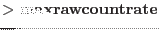

XMM-Newton Science Analysis System
ommergelists (ommergelists-1.0.5) [xmmsas_20170112_1337-16.0.0]
Algorithmn
The program is written in c++. Within the following description of the algorithm, the term 'table' refers
to an XMM DAL (Data Acess Layer), API (Application Programmable Interface) structure that provides access (read, create or modify)
to a FITS table.
The program works in the following way:
- Carry out the following tests on the input and output files given on the command-line
- Check that both input source-list files exist- if not stop the program with an
error message.
- Check that both source-lists contain at least one source- if not issue a warning
and stop the program.
- Read in the RA and Dec values from the RA_CORR and DEC_CORR
columns, respectively, in the SRCLIST table (srclist1) of the product observation source-list file obtained
from the non-sky exposure images.
- Read in the RA and Dec values from the RA_CORR and DEC_CORR
columns, respectively, in the SRCLIST table (srclist2) of the product observation source-list file obtained
from the mosaiced sky-images.
- Produce a list of the sources that are found in both source-lists, by matching both lists using their celestial
coordinates and using a maximum matching angular separation of tolerance, where tolerance is an input
parameter and defaults to 2 arcsecs. matchedIndex1 will contain a list of the row numbers in srclist1
that have a match in srclist2, matchedIndex2 a corresponding list of the row numbers in srclist2
that have a match in srclist1 and unmatchedIndex2 a list of the row numbers in srclist2
that were not matched with any source in srclist1.
- Compute the RA
 Dec offsets between the matched cooordinates of the two lists.
Dec offsets between the matched cooordinates of the two lists.
- Create the output file with a SRCLIST table (srclist3) by copying srclist1 to srclist3.
- Create a list of the OM filters that are found in both tables (maybe less in srclist2)
- increase the size of the srclist3 by the size of unmatchedIndex2. The column elements along each of these rows
are initially set to null (indicating that the element has no value attached to it) and will be populated with the
unmatched data in the next stage..
- Loop through all the filters that are present in srclist2 and
- For the current filter FILT
- Load the source raw-count rate from column FILT_RAW_RATE and significances from column FILT_SIGNIFICANCE
in srclist2.
- Loop through from i=1 to i=the size of matchedIndex2
- Set j to matchedIndex1[i] and k to matchedIndex2[i].
- If source[k] in srclist2 has a non-null raw count-rate and a value no greater than 5 then-
EITHER
If the source parameters for source[j] in srclist1 have null values (ie not detected)
then set the values in srclist3 to the corresponding values in srclist2.
OR
- If the significance of source[k] in srclist2 has a greater significance
then the source significance of source[j] in srclist1 then set the filter columns for filter filt
for row matchedIndex1[i] in srclist3 to the corresponding values in srclist2.
- Loop through from i=1 to i=the size of unmatchedIndex2
- Set j to unmatchedIndex2[i]
- If the total raw count-rate of source[j] for filter FILT of srclist2 has a value no greater
than the maxrawrate value then set the parameters for the FILT columns in srclist3 to the corresponding values
to the FILT columns in srclist2.
- When a row is appended to the final table from the unmatched sources in source-list 2, and that row is
populated with all NULLS because the count-rates for all filters
, then the row is
deleted before the output table is written.
- Delete the RAW_RATE columns. Note that omsrclistcomb added these columns to srclist2 because
the input source-lists originated from mosaiced sky-images.
- SRCID coming from the new merged mosaiced list are re-numbered and a new column (SRCMOS) containing the original mosaiced SRCID is created.
- For each filter present, add a string column FILT_SKY to srclist3.
Each row of the new column will be set to YES if the
data for that particular filter originated from a
mosaiced-image, or NO otherwise.
- Change SRCID values for merged sources and create SRCMOS column containing original source identifiers from mosaiced list.
- Sort srclist3 into increasing RA order.
- If input parameter plotfile has a valid name, draw graphs that compare various properties
of the matched sources in srclist1 and srclist2.
- If input parameter regionfile has a valid name, produce a ds9 region file
that contains the matched sources (red regions), those unique to srclist2 (blue regions)
and those unique to srclist1 (green regions).
Subsections
XMM-Newton SOC/SSC -- 2017-01-12